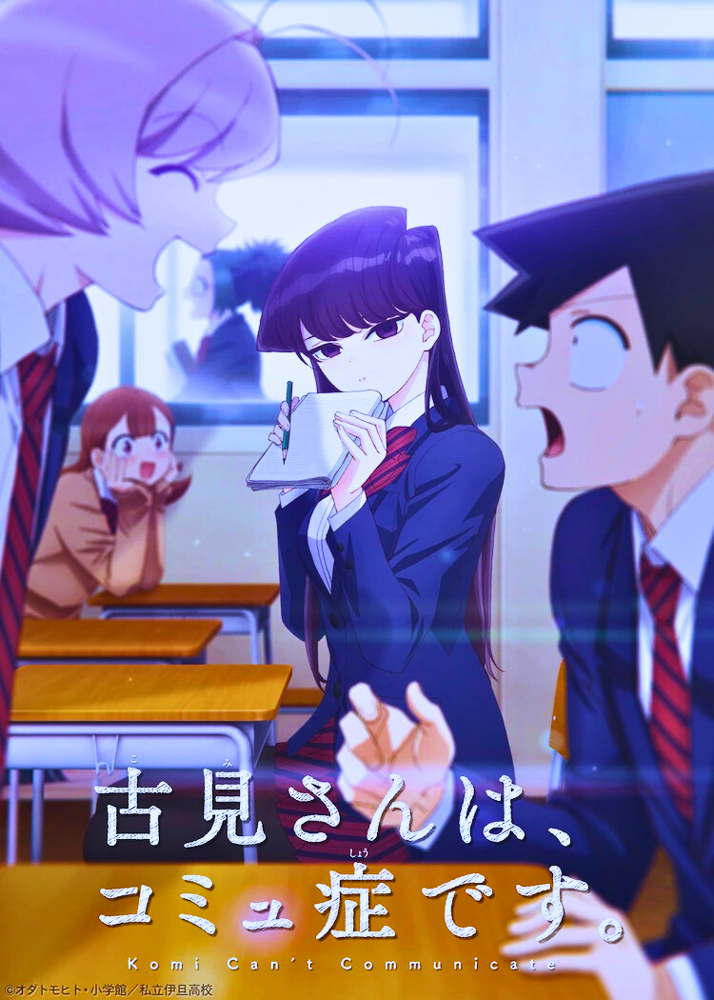
Komi can't Comunicate
Written and Illustrated by Tomohito Oda
Written and Illustrated by Tomohito Oda
 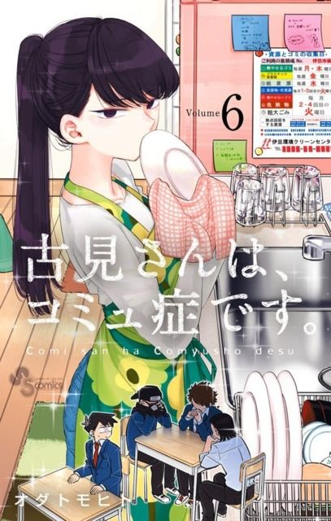 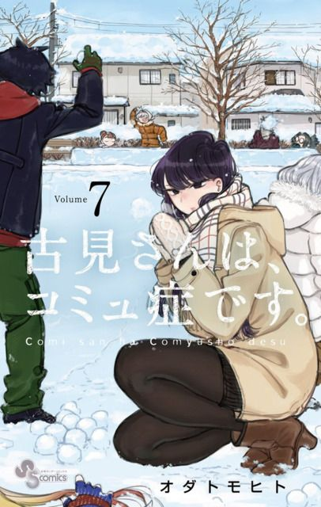 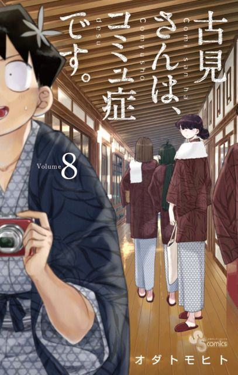 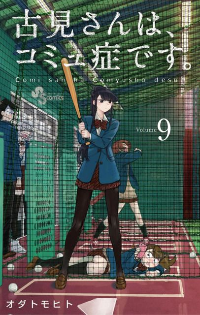 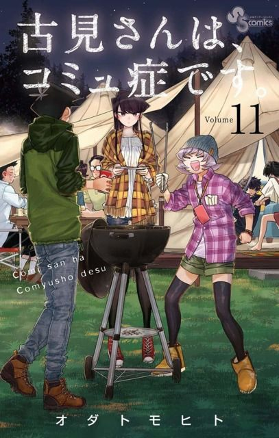 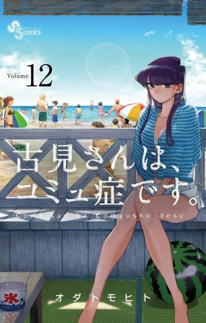 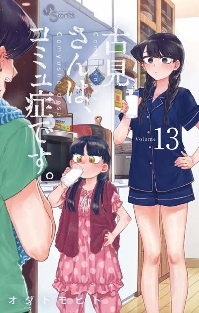 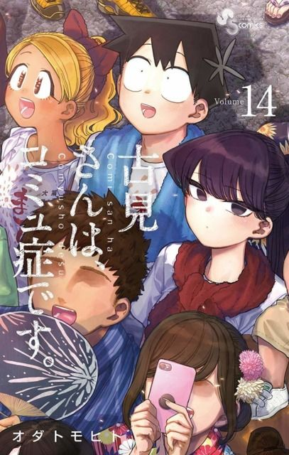 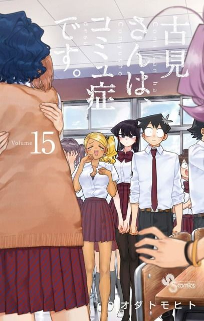 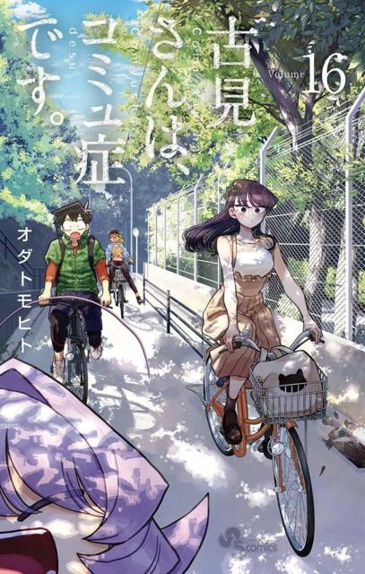
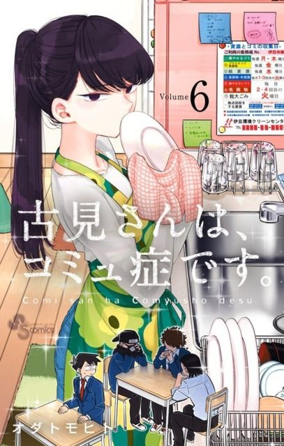 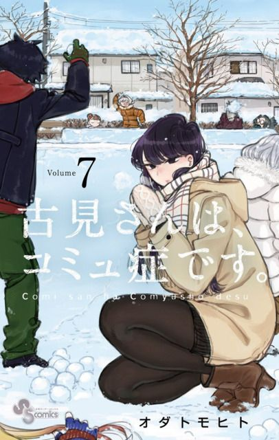 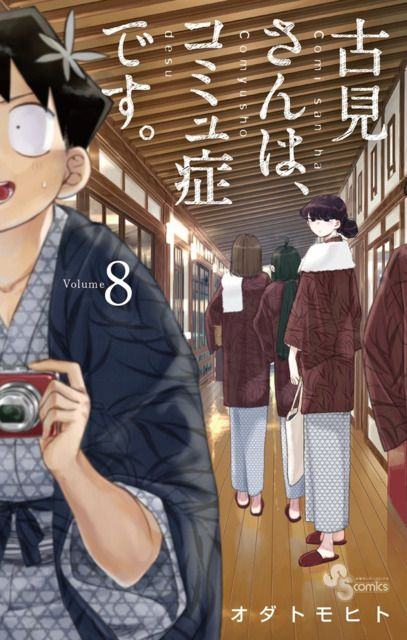 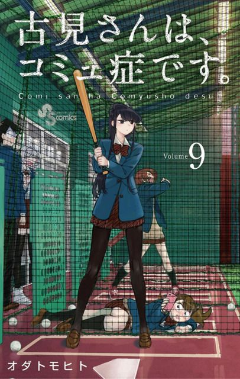 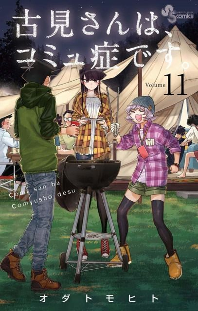 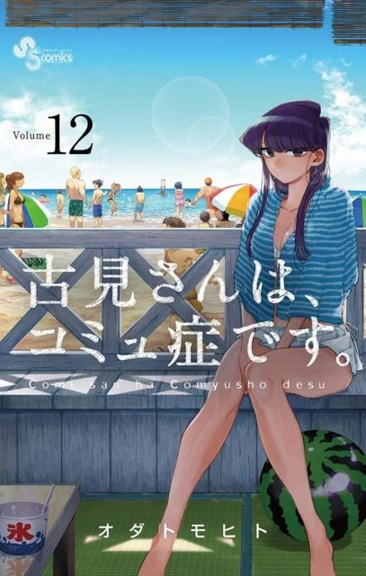 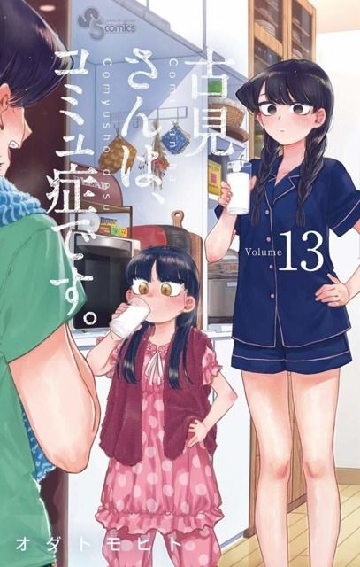 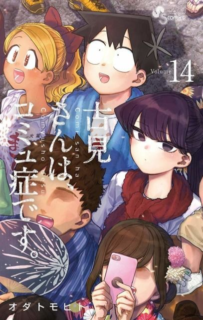 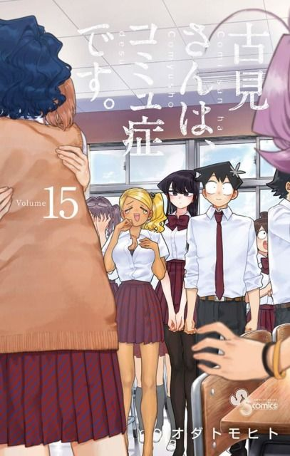 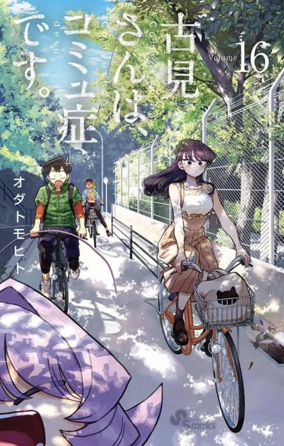 


As Tadano begins his high school career, he discovers that the school's beautiful queen named Komi. One day, after an encounter with Komi in the classroom, Tadano finds out that despite Komi's cold appearance, she has trouble communicating with other people. After this discovery Tadano embarks on a quest to help achieve Komi's dream of making 100 friends.